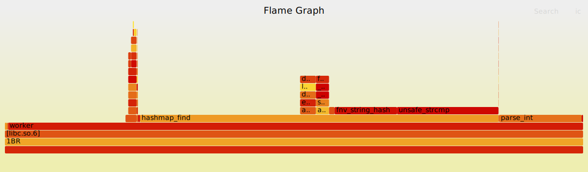

1 Billion Row Challenge
Introduction
The 1 Billion Row Challenge was introduced to the world at the beginning of 2024 as a way to learn how quickly we can process data. The premise is simple, you are given a file with 1 billion lines, each containing a weather station name, and a temperature recording, separated by a ; and finished with a \n.
Hamburg;12.0 Bulawayo;8.9 Palembang;38.8 St. John's;15.2 Cracow;12.6 Bridgetown;26.9 Istanbul;6.2 Roseau;34.4 Conakry;31.2 Istanbul;23.0
Your program then takes this data, organizes it alphabetically by station name, and finally outputs to STDOUT in the following format: <station_name>=<min>/<mean>/<max>, ....
For me, the most appealing part of this challenge is that the naive solution is extremely simple, but simple doesn’t cut it when we are dealing with an input file around 15GB in size. Nonetheless, we will start with a simple solution, and gradually evolve it as we go along.
Setup
The original 1BR challenge required solutions to be written in Java, but since then participants from many other languages have joined, though not officially. I thought that since the solution can be simple I would use this as an opportunity to improve my skills in C. The basic process will be to read the file line-by-line and enter each station into a hashmap. If the station already exists we will simply update its record. At the end we will sort the backing array alphabetically and print it all out.
I have previously written about a quadratic probing hashmap in C and that will make a great starting point for our solution.
Hashmap
The hashmap we had previously written uses a predefined struct called a pair which allows the underlying type to be changed out relatively effortlessly. For our solution today we will define a Record struct for each station, which serves as the value of our pair.
typedef struct Record { char* name; int64_t total; int64_t count; int64_t min; int64_t max; } Record; typedef struct { void* key; Record value; } pair;
We will of course be using string keys, which can make use of the string hashing and string equality functions already defined in the hashmap library.
Sorting
At the end of the program it needs to output each station sorted alphabetically. We might as well take advantage of the qsort function given in the cstdlib, as it should fast enough for our uses.
qsort takes 4 arguments, a pointer to the array, the number of elements, the size of each element, and a sorting predicate. The first 3 are self-explanatory, but the sorting predicate is probably a bit more unfamiliar. When sorting simple types like integers or floats we can use the comparison operators directly (>, <, etc.), but we are not storing simple types. We need a function that can sort the pairs stored in our hashmap.
If the relationship between an array and a hashmap is unfamiliar just think about a hashing function returning an index into an array, which tells us where we can go to find the data associated with that key. By the end of our program we should have an array with about half of its slots being full, but the ordering of elements has no significance to us.
Our sorting predicate will take in 2 pair pointers, which contain both a key and value. We are not interested in the value for sorting, so we immediately narrow down to the key. From there we can simply call strcmp on the 2 keys, which conveniently returns the exact right values for qsort to work. qsort needs to know the relationship between the 2 values, this is what is expects our sorting predicate to return.
| Ordering | Return Value |
|---|---|
| A < B | -1 |
| A == B | 0 |
| A > B | 1 |
For less than and greater than the magnitude of the number returned does not matter, only its sign. If you are familiar with strcmp you may realize that this is exactly the same table of values that it returns. Putting this all together gives us the following comparison function.
// Comparison function for qsort int compare_pairs(const void* a, const void* b) { const pair* pair_a = (const pair*)a; const pair* pair_b = (const pair*)b; // Assuming key is a string (char *) const char* key_a = (const char*)pair_a->key; const char* key_b = (const char*)pair_b->key; if (key_a == NULL && key_b == NULL) { return 0; // Both keys are null, consider them equal } else if (key_a == NULL) { return 1; // Null key should come after non-null key } else if (key_b == NULL) { return -1; // Null key should come after non-null key } else { return strcmp(key_a, key_b); // Compare non-null keys } }
That’s a lot more code than we explained above, so lets breakdown the addition NULL checks. Our hashmap will start out looking like a bit of Swiss cheese, with half of it’s space unused.
In order to move the empty cells to the end of the array we need to treat them as the greatest possible values so they will sort last. To do this we can make some simple checks for each of our 2 keys. If they’re both NULL we can obviously return 0, otherwise we check either key for a NULL value.
Naive Solution
With the setup work out of the way, we can finally look at the complete naive solution.
#include "hashmap/hashmap.h" #include <assert.h> #include <stdio.h> #include <stdlib.h> #include <string.h> // Comparison function for qsort int compare_pairs(const void* a, const void* b) { // Covered above } int main() { hashmap h = hashmap_init(&fnv_string_hash, &str_equals, 0.5, 17720); FILE* fin; char* line = NULL; size_t len = 0; ssize_t nread; fin = fopen("./data/measurements.txt", "r"); while ((nread = getline(&line, &len, fin)) != -1) { char* copy = line; strtok(copy, ";"); char* temp_s = strtok(NULL, "\n"); float temp_f = strtof(temp_s, NULL); int temp_i = temp_f * 10; pair* p = hashmap_find(&h, copy); if (p) { p->value.count++; p->value.total += temp_i; if (temp_i > p->value.max) { p->value.max = temp_i; } else if (temp_i < p->value.min) { p->value.min = temp_i; } } else { hashmap_insert(&h, strdup(copy), (Record){.name = copy, .total = temp_i, .count = 1, .max = temp_i, .min = temp_i}); } } qsort(h.array, h.capacity, sizeof(pair), compare_pairs); for (size_t i = 0; i < h.capacity && h.array[i].key; i++) { printf("%s=%.1f/%.1f/%.1f, ", (char*)h.array[i].key, (float)h.array[i].value.min / 10, (float)h.array[i].value.total / 10 / (float)h.array[i].value.count, (float)h.array[i].value.max / 10); free(h.array[i].key); } free(line); fclose(fin); hashmap_free(&h); }
Let’s go over each part of the code in a bit more detail before we begin our optimizations. We start by initializing our hashmap with some sane default values. A load factor of 0.5 was determined to be optimal for a quadratic probing hashmap, and we know the size of our input so we can pre-allocate the array to 17720 elements (this may be considered cheating, but the constraints say nothing about pre-allocation).
From there we setup a simple getline loop that reads the file one line at a time. Within the loop we can split the line using strtok on the ; and \n characters respectively. Floating point numbers are parsed using strtof before being converted to an integer to save time in future computations.
The last step in this loop is to check if the station exists in the hashmap, updating it if it does, and creating it if it does not.
The loop ends when we hit EOF, and we can then sort the array. As stated before, we pass in the array itself, the size, the size of each element, and the sorting predicate.
Finally, we can rip through the array printing out the required data.
Running Time
I will be compiling code examples with the makefile in the 1BR subdirectory. The only real highlights are the use of -O3 optimizations. Attempts with a runtime over 1 minute will likely only be run once to save my some time. Later solutions with runtimes under 1 minute will be run several times for consistency.
Our first attempt comes in at 116.01 seconds, not the quickest, but much faster than I was expecting after reading about other attempts.
| Attempt | Runtime |
|---|---|
| Naive | 116.01 seconds |
Flamegraph
It seems like every article on the challenge shows a flamegraph of their different attempts, so I figured I would produce some as well.
It looks like we’re spending nearly all of our time in hashmap_find, something we will definitely have to look at as we go along.
mmap
For iteration 2 were are going to change from a buffered file stream through fopen, to mmapping the entire file into our address space. This allows us to treat the file as one giant array, while the operating system manages the actual fetching of pages from disk. This change may seem simple, but it causes us to have to rewrite our parsing logic just slightly.
#include "hashmap/hashmap.h" #include <assert.h> #include <fcntl.h> #include <stdio.h> #include <stdlib.h> #include <string.h> #include <sys/mman.h> #include <sys/stat.h> #include <unistd.h> // .... int main() { hashmap h = hashmap_init(&fnv_string_hash, &str_equals, 0.5, 17720); char* file; int fd; struct stat sb; fd = open("./data/measurements.txt", O_RDONLY); fstat(fd, &sb); file = mmap(NULL, sb.st_size, PROT_READ, MAP_PRIVATE, fd, 0); size_t cursor = 0; char name[100]; char temp[5]; while (cursor < sb.st_size) { int name_pos = 0; int temp_pos = 0; while (file[cursor] != ';') { name[name_pos++] = file[cursor++]; } name[name_pos] = '\0'; cursor++; while (file[cursor] != '\n') { temp[temp_pos++] = file[cursor++]; } temp[temp_pos] = '\0'; cursor++; float temp_f = strtof(temp, NULL); int temp_i = temp_f * 10; pair* p = hashmap_find(&h, name); if (p) { p->value.count++; p->value.total += temp_i; if (temp_i > p->value.max) { p->value.max = temp_i; } else if (temp_i < p->value.min) { p->value.min = temp_i; } } else { hashmap_insert(&h, strdup(name), (Record){.name = name, .total = temp_i, .count = 1, .max = temp_i, .min = temp_i}); } } qsort(h.array, h.capacity, sizeof(pair), compare_pairs); // ....
Previously we used getline, which is a great function for small program, but can drastically slow down more complex ones. One reason why is that we end up doing twice the amount of work to read over a string, once to find the newline, and a second time to split the string up. Instead of relying on getline we can tune the parsing to be specific to our use case.
We create two buffers, one for the station name, and another for the temperature. According to the original problem statement we know the station names can be at most 100 characters, and the temperatures will be a most 5 characters (-55.5). From there we read along one character at a time adding it to the name array, which gets null terminated once we the hit ;. We then move on to the temperature repeating the exact same process until we come across a newline.
Do these changes net us any benefit? Let’s find out.
Running Time
| Attempt | Runtime | % Change |
|---|---|---|
| Naive | 116.01 seconds | |
| mmap | 73.24 seconds | -37.73% |
Great! We made a huge time savings just in our file reading strategy. I know there is still plenty of room for improvement, so let’s look at that flamegraph again.
Flamegraph
Obviously we’re still spending most of our time in hashmap_find, which we haven’t got around to optimizing yet. Interestingly the graph looks mostly the same even with our runtime dropping by 37%. Before we move on to other optimizations I think we can actually improve our parsing even further.
Parsing Ints
So far we have been converting parsed floats directly into integers to keep future computations off the FPU, which is much slower than the ALU. Because of the strict input format we can actually skip the floating-point conversion entirely.
// .... while (file[cursor] != '\n') { if (file[cursor] == '.') { cursor++; } temp[temp_pos++] = file[cursor++]; } temp[temp_pos] = '\0'; cursor++; int temp_i = atoi(temp); // ....
We made one optimization that saves us quite a bit time. Instead of parsing 55.5 as a float and then multiplying by 10 we can simply drop the decimal and parse the number as an int. This results in the same value as if we multiplied the float by 10 before converting to an integer.
A change like that is easy to read and would probably net us a sizeable improvement for such little effort, but that’s not what this challenge is about. We want absolute speed at any cost, so we will write our own integer parsing function.
int parse_int(const char* c) { bool negative = (*c == '-'); c += negative; char num[3] = {0}; int num_pos = 0; while (*c != '\0') { num[num_pos] = (*c != '.') ? *c : num[num_pos]; // If c is '.', keep num[num_pos] the // same, otherwise assign *c to it num_pos += (*c != '.'); // Increment num_pos only if c is not '.' c++; } int accum = 0; char* cursor = num; while (*cursor) { accum = (accum * 10) + (*cursor - '0'); cursor++; } // 2's complement by hand return (accum ^ -negative) + negative; } // .... while (file[cursor] != '\n') { temp[temp_pos++] = file[cursor++]; } // ....
A bit more complex, but we wrote it ourselves so surely it must be faster 🤓. The majority of the optimizations here are to remove branches from our code as much as possible.
The first line is a little trick that takes advantage of the fact the true/false are just stored as 1/0. If we see a negative sign first it will advance our cursor so that we look past it. From there we create a fixed size buffer and parse our integer as before. Our code scans along until the null byte, adding each character unless it happens to be a '.'.
We then create the actual integer by first multiplying the accumulator by 10, and adding the digit value of the character. The last step is to XOR the accumulator with -negative, and add back in negative. This is possibly the most confusing part so let’s step through both cases.
If the number is to remain positive we would XOR accum with 0, and finally add back in 0, which would do nothing to our number. Easy enough to understand. However if the number is meant to be negative things get more complex.
If you’ve previously learned two’s complement this may look familiar. Negative numbers can be represented using their positive counterpart with some addition bit manipulation. To convert between the two forms we can follow two simple steps.
- Flip every bit, (0 => 1) and (1 => 0)
- Add 1
That might seem like it has nothing to do with the last line of our parse_int function, but in fact that is exactly what we’re doing. If negative is true it will hold a value of 1. XORing any value with all 1’s will flip its bits, step 1 accomplished. The only remaining step is to add 1, which just so happens to be the value held in negative!
Does this slightly unreadable code give us significant gains?
Running Time
| Attempt | Runtime | % Change | % Total |
|---|---|---|---|
| Naive | 116.01 seconds | ||
| mmap | 73.24 seconds | -37.73% | |
| parseint | 46.46 seconds | -35.20% | -59.95% |
An 35% reduction in runtime over the mmap solution! That puts us at a 60% reduction in runtime from the naive solution. For a single threaded approach I think we’re now at just about the limit for reading and parsing the file, let’s look at the flamegraph to see if we can gain any insights.
Flamegraph
We can now see where our code is spending time parsing ints which is great knowledge for future optimizations. There isn’t much to gain from this iteration of the flamegraph, so let’s finally address that large chunk of time spent in _hashmapfind=.
Hashmap Find
In day to day programming it is pretty rare that you get to manipulate the underlying data structures being used in a program, but luckily in C we have to write our own data structures! I happen to know that we can make some significant optimizations around our find and insert logic to hopefully speed up our program. This optimization is actually going to be inspired my the hashmap behavior in C++. When you do a simple lookup on a key (using []) in C++ it will not only return you the value there, but it will also insert it if it doesn’t exist. This would simplify our logic as we insert rows, so let’s see what we can do to achieve that.
// In hashmap.c // Returns a pointer to the pair if found, // otherwise returns NULL pair* hashmap_find(hashmap* h, void* key) { uint64_t index = h->hash_func(key) % h->capacity; for (int i = 0; i < h->capacity / 2 + 1; i++) { uint64_t new_index = (index + (i * i)) % h->capacity; pair* p = &h->array[new_index]; switch ((uint64_t)p->key) { case 0: { p->key = strdup(key); p->value = (Record){.name = p->key, .count = 0, .total = 0, .min = INT64_MAX, .max = INT64_MIN}; } return p; default: if (h->equals_func(p->key, key)) { return p; } } } return NULL; }
// .... int temp_i = parse_int(temp); pair* p = hashmap_find(&h, name); p->value.count++; p->value.total += temp_i; if (temp_i > p->value.max) { p->value.max = temp_i; } else if (temp_i < p->value.min) { p->value.min = temp_i; } // ....
This saves us from having to branch on every iteration of the loop, now we perform the exact same algorithm every time. This won’t give us the biggest time save as the branch predictor was probably able to figure out that the record exist after the first ~8000 or so iterations.
Running Time
| Attempt | Runtime | % Change | % Total |
|---|---|---|---|
| Naive | 116.01 seconds | ||
| mmap | 73.24 seconds | -37.73% | |
| parseint | 46.46 seconds | -35.20% | -59.95% |
| hashmapfind | 43.29 seconds | -6.82% | -62.68% |
Not the biggest savings but every little bit helps, we’re now well under half of the original runtime. Although with such a small change our flamegraph won’t be much different from before.
Flamegraph
One thing that has been on my mind looking at these flamegraphs is the hash function we’re using. Currently we are using and fnv hash which is known for its effectiveness and simplicity, however we don’t know if it is the fastest for our data. The hash function is called exactly 1 billion times so any speed up will hopefully show a large impact.
Hash Functions
I want to experiment with a few different hash functions to see what different they make in our overall runtime.
MurmurHash2
MurmurHash is designed specifically for use in hash-based lookups, which hopefully means it is better suited to our use case.
#define MIX(h,k,m) { k *= m; k ^= k >> r; k *= m; h *= m; h ^= k; } uint32_t MurmurHash2(const void* key, size_t len, uint32_t seed) { const uint32_t m = 0x5bd1e995; const int r = 24; const unsigned char* data = (const unsigned char*)key; uint32_t h = seed ^ len; uint32_t k; while (len >= 4) { k = *(uint32_t*)data; MIX(h, k, m); data += 4; len -= 4; } switch (len) { case 3: h ^= data[2] << 16; case 2: h ^= data[1] << 8; case 1: h ^= data[0]; h *= m; } h ^= h >> 13; h *= m; h ^= h >> 15; return h; }
Surprisingly enough, mh2 was significantly slower than our original fnv hash.
Running Time
| Attempt | Runtime | % Change | % Total |
|---|---|---|---|
| Naive | 116.01 seconds | ||
| mmap | 73.24 seconds | -37.73% | |
| parseint | 46.46 seconds | -35.20% | -59.95% |
| hashmapfind | 43.29 seconds | -6.82% | -62.68% |
| murmurhash2 | 59.28 seconds | 37.81% | -48.97% |
Other Hash Functions
I find it interesting that a faster hashing function performed so much worse than a simple FNV hash. The hash function has 2 key impacts on the speed of our hash table.
For one it has a runtime cost to compute the actual hash, which involves taking each character of the string and performing some sort of computation. For our dataset most keys are in the range of 16 bytes so that time to compute won’t have much of an impact.
The other way a hash function effects the speed of the hash table is in the number of collisions. Theoretically we would have a perfect hash function that mapped each of the ~9000 stations to a unique position in the table with zero collisions. In the real world this is nearly impossible, especially if the dataset is unknown at the time of implementation. This is where the probing strategy of our hash table comes in. Quadratic probing in combination with a prime number table size guarantees that it will find an empty spot within table_size/2 jumps.
Even with this smart probing strategy collisions still slow us down. So the better a hash function is at evenly distributing our values, the faster performance we will get. Luckily for us we have the source code for the hashmap, meaning we can count the exact number of collisions for different hash functions. In this section I will show a general overview of the hash function and how many collisions it produced.
I will not be covering runtimes in this section as I did not have time to perfectly integrate each hash function, meaning that their runtimes could be lowered with more careful planning. Instead, we will focus only on the number of collisions, as that was determined to have a greater impact on runtime.
fnv_string_hash
The original code uses the FNV hashing algorithm, specifically the FNV-1 version. The algorithm works with any array of bytes, which allows us to input a C-string.
uint64_t fnv_string_hash(void *pointer) { if (!pointer) { return 0; } uint64_t hash = 14695981039346656037ull; const char *str = (const char *)pointer; while (*str) { hash *= 1099511628211; hash ^= *str++; } return hash; }
Our FNV hash produces 3758 collisions, which is a lot more than I was expecting. This number does not represent the number of elements which have a collision, instead it represent the total number of hops each element has to make to find its position. Mostly elements have 0 hops, some have 1-2, and hopefully very few have >2 hops.
| Hash Algorithm | Collisions |
|---|---|
| FNV-1 | 3758 |
pointer_cast
I thought I would try my hand at coming up with a hashing function focuses purely on runtime, and this is where I learned that runtime had very little impact on performance for this problem. With most of the station names being around 16 characters I figured it would be safe cast the char* pointer into a 64-bit integer and use that as a key.
uint64_t pointer_cast(void *pointer) { return *(uint64_t*)pointer; }
A simple one instruction function that loads 64-bits from the memory address provided. Since the station names are fairly unique I figured this would way outperform the original FNV hash, but I was wrong. Coming in at 4353 collisions.
| Hash Algorithm | Collisions |
|---|---|
| FNV-1 | 3758 |
| pointercast | 4353 |
pointer_cast_2
Along the same idea as the previous iteration I tried creating a more complex hash by including a shift operation to scramble the bits some more.
uint64_t pointer_cast_2(void *pointer) { return *(uint64_t*)pointer | (*(uint64_t*)pointer >> 32); }
Once again this implementation came up short, although I was at least moving in the right direction with a very slight improvement at 4325 collisions.
| Hash Algorithm | Collisions |
|---|---|
| FNV-1 | 3758 |
| pointercast | 4353 |
| pointercast2 | 4325 |
djb2
Moving back to more traditional hash functions we have djb2 which essentially performs similar operation to the original FNV style of hash. The hash is multiplied by 33 each iteration, and the current character is added.
uint64_t djb2(void *pointer) { char* key = (char*)pointer; uint64_t hash = 5381; int c; while((c = *key++)) { hash = ((hash << 5) + hash) + c; } return hash; }
A simple function along the lines of many population hashing algorithms, and finally our first improvement in collisions! This time we have dropped to 3726 collisions.
| Hash Algorithm | Collisions |
|---|---|
| FNV-1 | 3758 |
| pointercast | 4353 |
| pointercast2 | 4325 |
| djb2 | 3726 |
sdbm
The original hashing function used in berkely db, with seemingly random constants that works surprisingly well. How does it work?
uint64_t sdbm(void *pointer) { char* key = (char*)pointer; uint64_t hash = 0; int c; while ((c = *key++)) { hash = c + (hash << 6) + (hash << 16) - hash; } return hash; }
Coming in at 3862 collisions it might work for some problems, but that won’t cut it here.
| Hash Algorithm | Collisions |
|---|---|
| FNV-1 | 3758 |
| pointercast | 4353 |
| pointercast2 | 4325 |
| djb2 | 3726 |
| sdbm | 3862 |
xxhash
xxhash is an extremely fast hashing algorithm popular in many open source projects. It carries with it a lot more complexity than any of the functions we have seen thus far.
#define XXH_PRIME64_1 0x9E3779B185EBCA87ULL #define XXH_PRIME64_2 0xC2B2AE3D27D4EB4FULL #define XXH_PRIME64_3 0x165667B19E3779F9ULL #define XXH_PRIME64_4 0x85EBCA77C2B2AE63ULL #define XXH_PRIME64_5 0x27D4EB2F165667C5ULL uint64_t xxhash(const void* input, size_t len, uint64_t seed) { const uint8_t* p = (const uint8_t*)input; const uint8_t* const end = p + len; uint64_t h64; if (len >= 32) { const uint8_t* const limit = end - 32; uint64_t v1 = seed + XXH_PRIME64_1 + XXH_PRIME64_2; uint64_t v2 = seed + XXH_PRIME64_2; uint64_t v3 = seed; uint64_t v4 = seed - XXH_PRIME64_1; do { uint64_t k1, k2, k3, k4; k1 = *(uint64_t*)p; p += 8; k2 = *(uint64_t*)p; p += 8; k3 = *(uint64_t*)p; p += 8; k4 = *(uint64_t*)p; p += 8; v1 += k1 * XXH_PRIME64_2; v1 = (v1 << 31) | (v1 >> 33); v1 *= XXH_PRIME64_1; v1 ^= v2; v1 = v1 * XXH_PRIME64_1 + XXH_PRIME64_4; v2 += k2 * XXH_PRIME64_2; v2 = (v2 << 31) | (v2 >> 33); v2 *= XXH_PRIME64_1; v2 ^= v3; v2 = v2 * XXH_PRIME64_1 + XXH_PRIME64_4; v3 += k3 * XXH_PRIME64_2; v3 = (v3 << 31) | (v3 >> 33); v3 *= XXH_PRIME64_1; v3 ^= v4; v3 = v3 * XXH_PRIME64_1 + XXH_PRIME64_4; v4 += k4 * XXH_PRIME64_2; v4 = (v4 << 31) | (v4 >> 33); v4 *= XXH_PRIME64_1; v4 ^= v1; v4 = v4 * XXH_PRIME64_1 + XXH_PRIME64_4; } while (p <= limit); h64 = ((v1 << 1) | (v1 >> 63)) + ((v2 << 7) | (v2 >> 57)) + ((v3 << 12) | (v3 >> 52)) + ((v4 << 18) | (v4 >> 46)); h64 = xxhash_finalize(h64); } else { h64 = seed + XXH_PRIME64_5; } h64 += (uint64_t)len; while (p + 8 <= end) { uint64_t k1 = *(uint64_t*)p; k1 *= XXH_PRIME64_2; k1 = (k1 << 31) | (k1 >> 33); k1 *= XXH_PRIME64_1; h64 ^= k1; h64 = (h64 << 27) | (h64 >> 37); h64 = h64 * XXH_PRIME64_1 + XXH_PRIME64_4; p += 8; } if (p + 4 <= end) { h64 ^= *(uint32_t*)p * XXH_PRIME64_1; h64 = (h64 << 23) | (h64 >> 41); h64 = h64 * XXH_PRIME64_2 + XXH_PRIME64_3; p += 4; } while (p < end) { h64 ^= (*p) * XXH_PRIME64_5; h64 = (h64 << 11) | (h64 >> 53); h64 = h64 * XXH_PRIME64_1; p++; } h64 ^= h64 >> 33; h64 *= XXH_PRIME64_2; h64 ^= h64 >> 29; h64 *= XXH_PRIME64_3; h64 ^= h64 >> 32; return h64; } uint64_t xxhash_finalize(uint64_t h64) { h64 ^= h64 >> 33; h64 *= XXH_PRIME64_2; h64 ^= h64 >> 29; h64 *= XXH_PRIME64_3; h64 ^= h64 >> 32; return h64; }
Even with all that complexity our distribution is still right around the same ~3700 collisions. Any benefit in distribution would likely be negated by the slower runtime of this algorithm anyway.
| Hash Algorithm | Collisions |
|---|---|
| FNV-1 | 3758 |
| pointercast | 4353 |
| pointercast2 | 4325 |
| djb2 | 3726 |
| sdbm | 3862 |
| xxhash | 3734 |
jenkins
The jenkins hash is very simple, and is touted to produce a great distribution. Once again we are not concerned with runtime, we just need a lower number of overall collisions.
uint64_t jenkins_hash(void* key, size_t len) { const uint8_t* data = (const uint8_t*)key; uint32_t hash = 0; size_t i; for (i = 0; i < length; ++i) { hash += data[i]; hash += (hash << 10); hash ^= (hash >> 6); } hash += (hash << 3); hash ^= (hash >> 11); hash += (hash << 15); return hash; }
A simple algorithm, but not an improvement over any other solution we’ve been able to find so far.
| Hash Algorithm | Collisions |
|---|---|
| FNV-1 | 3758 |
| pointercast | 4353 |
| pointercast2 | 4325 |
| djb2 | 3726 |
| sdbm | 3862 |
| xxhash | 3734 |
| jenkins | 3870 |
Hashing Conclusions
For now we will move forward while focusing on the djb2 hash algorithm. In the future it would be nice to create a test suite for our hashmap that allows us to easily benchmark many different hash algorithms at once for both speed and collision comparisons.
Just to make sure we are all on the same page let’s take a look at the runtime of our current fastest solution.
Running Time
| Attempt | Runtime | % Change | % Total |
|---|---|---|---|
| Naive | 116.01 seconds | ||
| mmap | 73.24 seconds | -37.73% | |
| parseint | 46.46 seconds | -35.20% | -59.95% |
| hashmapfind | 43.29 seconds | -6.82% | -62.68% |
| djb2 | 42.31 seconds | -2.26% | -63.53% |
Multithreading
Now we can finally get to the big performance improvements. I’m sure there is more we can squeeze out of a single threaded solution, but I am pretty happy with where we’ve ended up. For now, we can rewrite out code to start taking advantage of all these CPU cores.
There are many different approaches to concurrent and parallel programming, but we will try to choose the simplest of them all. With a file this large (~15GB) there is a lot of room on the table to work in parallel. I won’t say everything in this task can be done entirely independently, but a majority of the work before sorting the weather stations can.
For our first pass we will simply create 12 independent workers that will start at 12 different places in the file. They will each parse records independently, adding each to the hashmap. You may already see a problem with this approach, how do we know where to start each worker? If we split the file up evenly into 12 chunks we have no guarantee that each worker will start on the beginning of a line. We can solve this by having each worker walk backwards until they either hit the beginning of the file, or they find a newline.
Simple enough, but there is still an issue. Unless we give each worker their own hashmap (which would be a pain to reconcile at the end) we will have to synchronize their access to the memory. Shared resources are generally the hardest part of implementing a multithreaded program, with many valid solutions available. The simplest solution is a mutex surrounding their entire hashmap, which is simple enough to implement. Let’s take a look at how that would work.
#include <threads.h> // .... hashmap h; mtx_t hashmap_mutex; typedef struct thread_args { char *file; size_t size; ssize_t cursor; size_t end; } thread_args;
We start off by including a new header file threads.h which is part of the C11 standard. You can choose to use either threads.h or pthread.h here, the choice is up to you. A mutex is defined to protect access to the hashmap, which are both defined as a global so they are easily accessible to all threads. Threads can take in an argument in the form of a pointer to some piece of memory, which we will define in a struct. Each thread will need a pointer to the file, the size of the file, plus a start and end point.
Our thread function will first walk back to find an appropriate place to start, and then process data until it reaches its endpoint.
int worker(void* arg) { thread_args ta = *(thread_args*)arg; if (ta.cursor != 0) { while (ta.cursor > 0 && ta.file[ta.cursor] != '\n') { ta.cursor--; } ta.cursor++; } // Cursor is now pointing to the beginning of a line char name[100]; char temp[6]; while (ta.cursor < ta.end) { int name_pos = 0; int temp_pos = 0; while (ta.file[ta.cursor] != ';') { name[name_pos++] = ta.file[ta.cursor++]; } name[name_pos] = '\0'; ta.cursor++; while (ta.file[ta.cursor] != '\n') { temp[temp_pos++] = ta.file[ta.cursor++]; } temp[temp_pos] = '\0'; ta.cursor++; int temp_i = parse_int(temp); mtx_lock(&hashmap_mutex); pair* p = hashmap_find(&h, strdup(name)); p->value.count++; p->value.total += temp_i; if (temp_i > p->value.max) { p->value.max = temp_i; } else if (temp_i < p->value.min) { p->value.min = temp_i; } mtx_unlock(&hashmap_mutex); } return 0; }
A fairly straightforward solution which follows the outline described above. The actual parsing logic is copied over from the previous main function, producing the same name and temp variables. We then have to lock the entire table, perform our insert/update, and then release the lock. Can you see the problem with the solution already? If not, don’t worry, we will check both the runtime and flamegraph for more hints.
The final step is to set up our thread pool in main so that we can split out the work.
int main() { size_t thread_count = 12; thrd_t threads[thread_count]; // .... size_t work_size = sb.st_size / thread_count; for (int i = 0; i < thread_count; i++) { thread_args* ta = malloc(sizeof(thread_args)); *ta = (thread_args){.file = file, .size = sb.st_size, .cursor = i * work_size, .end = (i * work_size) + work_size}; thrd_create(&threads[i], worker, ta); } for (int i = 0; i < thread_count; i++) { thrd_join(threads[i], NULL); } // .... }
Running Time
| Attempt | Runtime | % Change | % Total |
|---|---|---|---|
| Naive | 116.01 seconds | ||
| mmap | 73.24 seconds | -37.73% | |
| parseint | 46.46 seconds | -35.20% | -59.95% |
| hashmapfind | 43.29 seconds | -6.82% | -62.68% |
| djb2 | 42.31 seconds | -2.26% | -63.53% |
| Naive Threading | 355.71 seconds | 740.70% | 206.62% |
Oops, we must have seriously mess something up there. But how? We increased the amount of work we are able to do in parallel, surely that should have cut our runtime by a factor of 12! Let’s see if the flamegraph can offer us any information as to why we were so much slower.
Flamegraph
Well no wonder we are slow! Our workers are spending 14.69% of their time attempting to acquire a mutex lock, not nice!
This problem is referred to as resource contention. The more workers we have fighting over a single lock, the slower our program will run. If we have to call hashmap_find 1 billion times, we just made that around 750% slower by allowing 12 threads to fight for access to the hashmap. Sadly we can’t just remove the lock and lets the threads have free access to our hashmap. Instead we can try and limit the scope of our locks to hopefully allow more concurrent access throughout the hashmap.
Internal Locks
What if instead of locking the entire table we were able to just lock a single entry. That would allow for all 12 threads to do work independently, only rarely having to wait when they happen to try to insert a record for the same station. That sounds like a reasonable approach, and one made possible by the fact that we can preallocate our table, preventing it from ever having to grow.
A general purpose hashtable needs to be able to dynamically resize as more elements are added, but we know exactly how large our table needs to be at compile time. Because of this we are able to move closer to what is known as a “lock free” hashmap. Our solution will still require the use of a lock, but locking the entire table for updates will no longer be required. We will still require locking the entire table for insert calls, as we need to ensure proper selection of a position in the hashmap.
We can start by slightly modifying the pair struct which our hashmap is based on.
#include <stdatomic.h> // .... typedef struct { void *key; Record value; atomic_bool locked; } pair;
Atomic operations are the building blocks on top of which concurrency control mechanisms like muticies are built on top of. They are specific hardware instructions that are able to execute atomically, meaning they are guarantee to do exactly what they say they will. These instructions are able to provide this guarantee because they block access by any other thread of execution while the operation is performed. This means the operations are slower than your average ADD or LSL, but their value is worth the runtime cost.
For our implementation each pair can either be “locked” or “unlocked”. If a thread goes to update a locked record it will simply wait its turn. This “waiting” behavior can be costly if the pair is locked for a long period of time, but in our program we know it will only be locked as long as it takes to update 4 fields of the struct. Our point of comparison here will be time spent in pthread_mutex_unlock vs time spent in spin_lock. Speaking of spin_lock let’s quickly implement one.
void spin_lock(pair* p) { while (atomic_exchange(&p->locked, true)) { // Spin until the lock is released while (atomic_load(&p->locked)) { // Do nothing, just spin } } }
If you’ve heard of a spin lock before this will probably make perfect sense, but the concept is new to me. Let’s break down the atomic operations first, and then we’ll see how those factor in to the spin_lock.
atomic_exchange attempts to put the value true in locked, in either case it returns the previous value in locked. So if the lock was already acquired it will return true causing us to enter the inner loop. Once inside we continuously call atomic_load, which returns the current value of the lock. We will loop as long as the lock is held, exiting as soon as the value returned is false, at which point the outer look will acquire the lock and we are free to move on.
This concept is called a spin lock as is very common when synchronizing memory access across multiple threads. Just as we acquire a lock we will also need to release the lock.
void spin_unlock(pair* p) { atomic_store(&p->locked, false); }
Unlock will only ever be called while we hold the lock, so it is safe to perform this directly with a store operation.
We can update the worker thread to take advantage of the new locks.
// .... pair* p = hashmap_find(&h, strdup(name)); spin_lock(p); p->value.count++; p->value.total += temp_i; if (temp_i > p->value.max) { p->value.max = temp_i; } else if (temp_i < p->value.min) { p->value.min = temp_i; } spin_unlock(p); // ....
Now all 12 threads should be able to seamlessly update records without having to fight over locks, and we have an elegant solution in place for when there is resource contention. But you may have noticed something that will make our solution invalid. We only lock down a record as we go to update it, which leaves the case of inserting a new record unprotected. Sadly, this means we will have to walk back out hashmap_find optimization and return to also calling hashmap_insert.
void hashmap_insert(hashmap* h, void* key, Record value) { pair new = {key, value, false}; // Locking for the shortest possible time mtx_lock(&hm_mutex); pair* first_avail = hashmap_first_avail(h, key); *first_avail = new; mtx_unlock(&hm_mutex); h->size++; }
I’m only showing the relevant code here, but we essentially will call insert and block all other inserts until our changes have settled. The nice thing about this change is that hopefully inserts will only happen in the first few moments of execution, and everything from then on will be updates.
// .... pair* p = hashmap_find(&h, name); if (p) { spin_lock(p); p->value.count++; p->value.total += temp_i; if (temp_i > p->value.max) { p->value.max = temp_i; } else if (temp_i < p->value.min) { p->value.min = temp_i; } spin_unlock(p); } else { char* name_copy = strdup(name); hashmap_insert(&h, name_copy, (Record){.name = name_copy, .total = temp_i, .count = 1, .min = temp_i, .max = temp_i}); } // ....
Our insert/update logic now has to branch on if the record exists or not. Sadly for the best performance the locking on inserts is hidden from us in the main function, but I think we can ignore that for now. Let’s see if that helps our runtime.
Running Time
This is going to be our most sizeable improvement since the first step in our exploration.
| Attempt | Runtime | % Change | % Total |
|---|---|---|---|
| Naive | 116.01 seconds | ||
| mmap | 73.24 seconds | -37.73% | |
| parseint | 46.46 seconds | -35.20% | -59.95% |
| hashmapfind | 43.29 seconds | -6.82% | -62.68% |
| djb2 | 42.31 seconds | -2.26% | -63.53% |
| Naive Threading | 355.71 seconds | 740.70% | 206.62% |
| Internal Lock | 9.01 seconds | -97.47% | -92.23% |
We have achieved at 92% reduction in runtime! Lets check out any potential bottlenecks in our flamegraph.
We see that our workers are spending ~15% of their time working with the internal locks we added to each record. While this is obviously a huge improvement from before, I don’t like the fact that our threads are still fighting over locks.
Earlier I had mentioned that giving each thread its own hashmap could improve performance, but reconciling those individual hashmaps at the end would be pain. Well now it’s time to embrace that pain and see if it can improve performnce.
Individual Maps
Before we start rewriting our workers and the main function lets rationalize these decisions. Currently our program called hashmap_find 1 billion times, with around 8800 calls to insert when a new record is discovered. Giving each worker its own hashmap would keep the 1 billion called to hashmap_find, the same ~8800 calls to insert (per thread), and adding in 11 * ~8800 calls to hashmap_find to reconcile at the end.
That comes in right around 100,000 calls to hashmap_find after the threads have finished parsing. A drop in the bucket compared to other 1 billion calls, just 0.01% of the total operations.
Just judging on numbers alone this should be a worthwhile improvement, but as always we are going to implement it and check the performance.
To start off each thread will now need to take in a pointer to a hashmap.
typedef struct thread_args { char* file; size_t size; ssize_t cursor; size_t end; hashmap* internal_hm; } thread_args;
Which we will create in main, and initialize per thread.
int main() { size_t thread_count = 12; thrd_t threads[thread_count]; hashmap hashmaps[thread_count]; // ....
int worker(void* arg) { thread_args ta = *(thread_args*)arg; *ta.internal_hm = hashmap_init(&fnv_string_hash, &str_equals, 0.5, 17729); if (ta.cursor != 0) { while (ta.cursor > 0 && ta.file[ta.cursor] != '\n') { // ....
The other nice part is that we can drop all locks and special insert/update logic. Our code will look much more similar to previous implementations.
// .... int temp_i = parse_int(temp); if (ta.cursor >= ta.end) { return 0; } pair* p = hashmap_find(ta.internal_hm, name); p->value.count++; p->value.total += temp_i; if (temp_i > p->value.max) { p->value.max = temp_i; } else if (temp_i < p->value.min) { p->value.min = temp_i; } // ....
Meaning we will need to revert our changes to hashmap_find.
pair *hashmap_find(hashmap *h, void *key) { uint64_t index = h->hash_func(key) % h->capacity; for (int i = 0; i < h->capacity / 2 + 1; i++) { uint64_t new_index = (index + (i * i)) % h->capacity; pair *p = &h->array[new_index]; if (p->key == 0) { char *copy_key = strdup(key); *p = (pair){.key = copy_key, .value = (Record){ .name = key, .total = 0, .count = 0, .min = INT64_MAX, .max = INT64_MIN, }}; return p; } else if (!unsafe_strcmp(p->key, key)) { return p; } } return NULL; }
Great! We are able to remove all locks and muticies from our code. As we observed previously our program spend around 15-20% of its time waiting to acquire a lock, or releasing it. Hopefully by making this change we will see a ~15% reduction in run time.
Running Time
| Attempt | Runtime | % Change | % Total |
|---|---|---|---|
| Naive | 116.01 seconds | ||
| mmap | 73.24 seconds | -37.73% | |
| parseint | 46.46 seconds | -35.20% | -59.95% |
| hashmapfind | 43.29 seconds | -6.82% | -62.68% |
| djb2 | 42.31 seconds | -2.26% | -63.53% |
| Naive Threading | 355.71 seconds | 740.70% | 206.62% |
| Internal Lock | 9.01 seconds | -97.47% | -92.23% |
| Individual Maps | 6.72 seconds | -25.42% | -94.21% |
Even better than we anticipated! With each thread having its own map I was expecting more pressure on our CPUs cache, which would have led to slower performance, but it looks like we were able to get away with that here. Now we can see where this version of the program is spending time.
Flamegraph

Ignoring the “hair” from the graph (which are mostly related to page faults), we can see that our time is now being spent in the 3 key function that we wrote! The majority of time is still spent in hashmap_find which is expected, as the majority of work is done here. At this point our paths for improvement are either a rewrite, or to continue tweaking the 3 key functions.
Final Improvements
For now this is where I am going to call it. Of course the time could be dropped further, but that would likely require an architectural rewrite, which I don’t have the time for currently. I was able to bring the time down to 6.12 seconds by increasing the initial capacity of the map, subsequently dropping the collisions to ~1700, just around half of the previous value.
Another easy change to the hashmap is changing up the probing strategy. The original implementation uses quadratic probing, which can produce suboptimal results, especially with lots of non unqiue data. I had a suggestion to try linear probing, but that actually made both the number of collisions and the runtime worse. I could also try separate chaining, but something tells me that would also be slower. What I ultimately ended up settling on is chain hashing. Instead of calculating a hash once and then following a fixed probing strategy, we can calculate a new hash for each collision.
At that point we are no longer hashing an entire string, so we may see potential performance improvement. In fact, both the overall collisions and the runtime dropped, leaving us with a runtime of 6.08 seconds. Here’s one final flamegraph to show how far we’ve come!

The small blocks are once again mostly related to page faults, which I don’t really want to explore right now. So that’s it! A sizeable improvement over our original naive implementation, but it’s always good to know that both solutions solved the problem, and that original solution took less than 10 minutes to write, whereas the final solution is the effort of days of work!